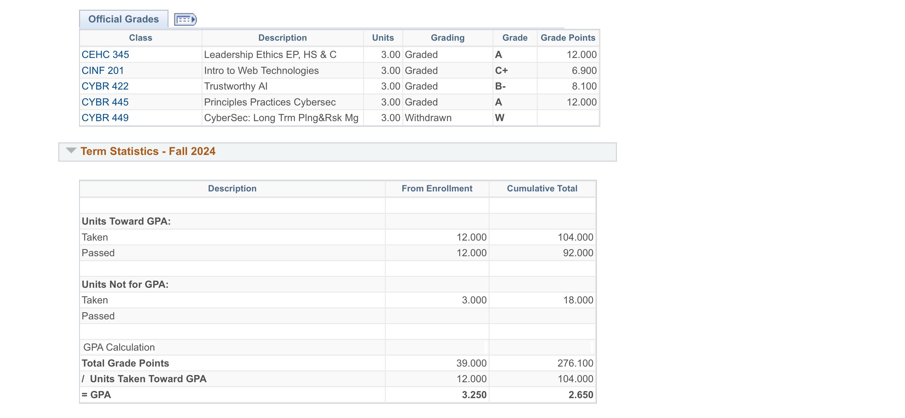

Specific
Our chapter's goal was to increase our overall GPA by 0.2 this semester, excelling past our overall GPA standard of a 2.8. With every undergraduate Hermano currently being a senior, we felt as if it was apparent for us to go out the best that we can academically, so we decided placing a goal like this will not only push us, but the others after us.
Measurable
We measured our progress by tracking one another's exam and quiz grades, holding each other accountable through collaboration. We took note of all of our previous semester and cumulative GPAs, and used that for our baseline to grow from this semester.
Screenshot of GPA Progress:
Achievable
We implemented "Tutor Tuesdays," with Hermanos meeting in the library weekly from 12 PM to 4 PM to study together with other students. Many Hermanos have overlapping majors, allowing for collaboration within many different classes. During our "Tutor Tuesdays", we also took this time to not only connect deeper with our advisors and professors, but also connect the rest of the student body to the academic help the University provides.
Relevant
This goal aligns with our mission of academic excellence, ensuring both our chapter members and the community excel academically. Our chapter's GPA requirement is a 2.8, but not only do we wish to push this standard on ourselves, but the student body and the community we represent as well.
Timebound
We aimed to achieve this overall goal by the end of the academic year, taking steps each semester to increase each GPA slightly to reach the final goal by the end of the school year.
Summary
This SMART goal initiative has strengthened our commitment to academic excellence and fostered a supportive environment for success.